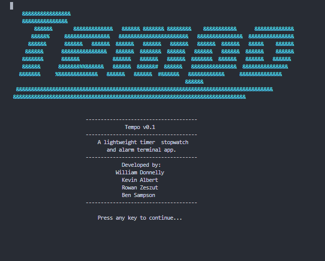

.png)
Tempo


A versatile command-line application that allows users to create and manage timers and stopwatches
Click here if you want to participate in the beta testing of the application.
Developers
Feature
- Timer: Set custom countdown timers with precise control.
- Start, pause, and resume functionality
- Quickly create new timers
- Reset timer
- Visual progress bar
- Stopwatch: Measure elapsed time with a hundredth of a second precision.
- Start, pause, and resume functionality
- Reset stopwatch
- Create split times
- User-friendly Interface:
- ASCII art time display
- Clear on-screen instructions
- Responsive keyboard controls
How to Run
- Ensure you have CMAKE installed on your system.
- Open an IDE and navigate to the project directory.
- Configure the project directory with CMake.
- Build and run the project.
Usage
Upon starting the application, you'll be presented with a menu:

The alarm feature is currently under development and is not available.
- Use the number keys to select a function or 'Q' to quit.
- Follow the on-screen instructions to control each feature.
Requirements
- C++ compiler with C++11 support
- Windows operating system (due to use of Windows-specific libraries)
Future Enhancements
- Implement Alarm functionality
- Add sound notifications
- Expand platform support beyond Windows
Contributions
We welcome contributions to Tempo! Please feel free to submit issues and pull requests.